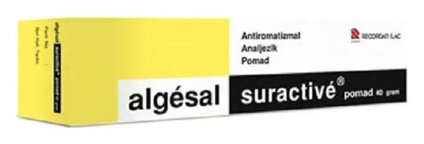

Algesal Suractive %10 + %1 Merhem, 40 g

Ne için kullanılır
KT · Bölüm 1• ALGESAL SURACTİVE, etkin madde olarak dietilamin salisilat ve nopoksamin içeren beyaz renkli, hafif lavanta kokulu merhemdir. Dietilaminsalisilat analjeziktir (ağrı kesici), antienflamatuar (iltihap ve ödemi azaltan maddelerin ve tedavilerin ortak adıdır) etkiye sahiptir ve ödemi hafifletir. Nopoksamin ağrıyı hızla gideren ve kasları gevşeten, lokal olarak etkili bir anesteziktir (hücrelerin özellikle sinir sistemi hücrelerinin biyolojik fonksiyonlarını yavaşlatan veya durduran ilaç). Etkin maddeler cilt tarafından hızlıca ve tamamen emilir ve doğrudan ilgili bölgeye etki eder. • ALGESAL SURACTİVE, 40 gr’lık alüminyum tüpte Hasta Kullanma Talimatını da içeren karton kutuda kullanıma sunulmaktadır. • ALGESAL SURACTİVE, yetişkinlerde ve 7 yaşından büyük çocuklarda; kas ve eklem ağrıları, omuz, kol ve omurga ağrıları, lumbago (bel ağrısı), ezilmeler, burkulmalar,
incinmeler, morarmalar, tendon (hareketimizi sağlayan, kasların ürettiği gücü kemik ve eklemlere ileten bağlardır) ve tendinit (tendonların iltihaplanması ve tahrişe uğraması), sinir ağrılarının (nevralji) lokal tedavisi için kullanılır.